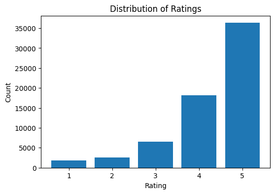

Danielle Matijas
Data Science & Machine Learning ePortfolio
May 2025 – August 2025

Scroll to explore
Featured Project

Hover or click to flip · flips back when you leave
More Projects

Prediction system for potential customers
Classifies leads most likely to convert using logistic regression and tree-based models; includes feature engineering and evaluation.
Logistic RegressionRandom ForestsModel EvaluationFeature Engineering
Model Journey & Outcome
- Baseline: Majority‑class & simple EDA rules to quantify uplift.
- Phase 1: Pruned Decision Tree — reduced overfitting and improved interpretability.
- Phase 2: Tuned Random Forest — grid search over `n_estimators`, depth, and split/leaf sizes.
- Final recommendation: Deploy the Random Forest as the primary conversion scorer; score daily, route the top decile to Sales, tune threshold to precision/recall targets, and monitor F1; maintain a nurture track for low‑propensity leads.

Customer personality segmentation
Segments customers with clustering to identify actionable personas and tailor marketing strategies.
K-Means ClusteringEDADimensionality Reduction
Model Journey & Outcome
- Prep: Cleaned & scaled features; winsorized outliers; PCA preview.
- Modeling: Elbow + Silhouette to pick k=4 interpretable clusters.
- Interpretation: Profiled centroids to define personas & marketing actions.
- Final recommendation: Adopt a 4‑segment persona map and personalize offers/channels; review segments monthly, refresh quarterly.

Data Analysis • Python • Machine Learning • LLMs • Recommenders • Visualization